Universality
November 19, 2024 • Philip Yao, Sheridan Feucht
In this notebook we investigate how representations of neural networks.The Platonic Representation Hypothesis
Paper link
At time of publication the authors were affiliated as follows:
Minyoung Huh MIT PhD
Brian Cheung MIT Postdoc
Tongzhou Wang MIT PhD
Phillip Isola Professor at MIT
Plato’s Allegory of the Cave
People are born and raised in a cave where their heads are chained such that they can only see shadows of real world objects. The key points are: 1) our interaction with the physical world is through a projection of the world onto our senses and 2) there exists an ideal reality which originated these projections. Similar concepts: phenomenalism, idealism, Donald Hoffman's VR headset analogy of consciousness.
Definitions
The authors only consider vector representation.
A representation is a function \(f : X → R^n\) that assigns a feature vector to each input in some data domain X .
A kernel, K : X × X → R, characterizes how a representation measures distance/similarity between datapoints. K(xi, xj ) = ⟨f(xi), f(xj )⟩, where ⟨ · , · ⟩ denotes inner product, xi, xj ∈ X and K ∈ K.
A kernel-alignment metric, m: K × K → R, measures the similarity between two kernels, i.e., how similar is the distance measure induced by one representation to the distance measure induced by another. Examples include Centered Kernel Distance (CKA) (Kornblith et al., 2019), SVCCA (Raghu et al., 2017), and nearest-neighbor metrics (Klabunde et al., 2023).
Throughout the paper, a ML model acts as the representation function, the
kernel measures the similarity between model embedded points and the
kernel-alignment metric measures the similarity between two models based on
how they embed datapoints. The kernel alignment metric used is this:
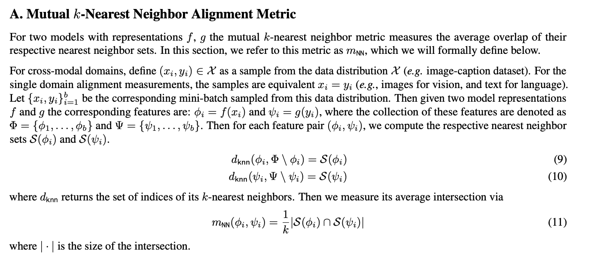
Past Evidence of similarity of representations between different models: (not from this paper)
Various works have stitched together portions of a model with portions of a
different model. If the resultant model performs well then representations
at the stitching point are similar and compatible. E.g. see "Lenc, K. and
Vedaldi, A. Understanding image representations by measuring their
equivariance and equivalence".
There are some neurons across differing
vision models were all activated by the same pattern. See the paper on
Rosetta Neurons.
Models with similar outputs (e.g., as a result of having
high performance) also have similar internal activations. See "Balestriero,
R. and Baraniuk, R. G. A spline theory of deep learning"
Experiments
Alignment appears to increase with model scale and performance.
This has been previously noted in other papers. The paper expands with this additional experiment 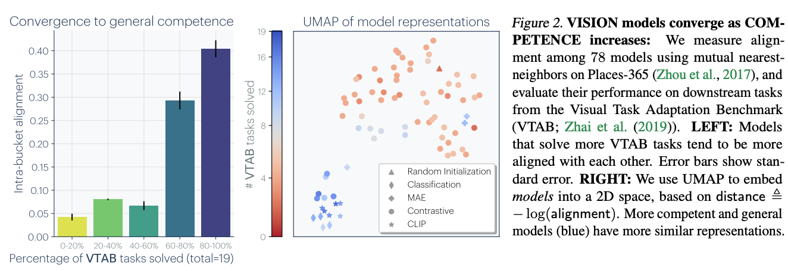 "We bin these models based on their average transfer performance on the VTAB dataset (Zhai et al., 2019), and then measure the average kernel alignment of the models within each bin. The results indicate that models with high transfer performance form a tightly clustered set of representations, while models with weak performance have more variable representations ... This suggests that models that are competent all represent data in a similar way. Echoing Bansal et al. (2021) and Tolstoy (1877), we might say: all strong models are alike, each weak model is weak in its own way"Representations are converging across modalities.
Again, there are works in other papers that implies this. This paper samples models solely trained either on vision or language and find that the better an LLM is at language modeling, the more it tends to align with vision models. For example in the first graph below, language model bloom0.56b has the worst language performance and also worst alignment to vision model dinov2, while llama 65b has the best alignment and performance. 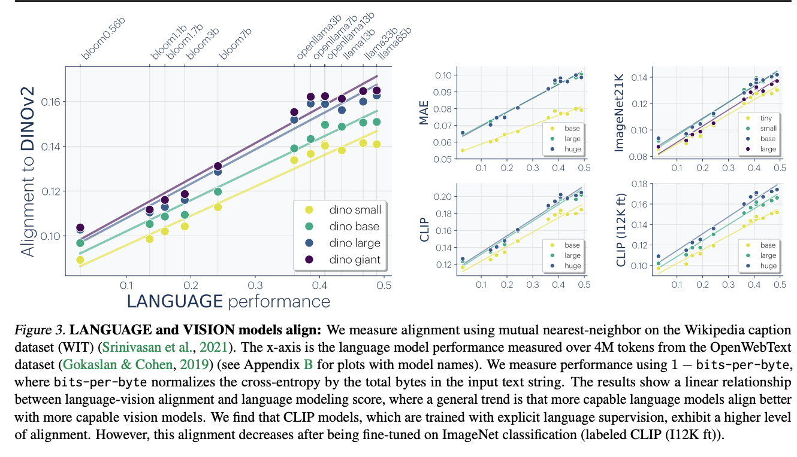Why is there convergence?
The Multitask Scaling Hypothesis: There are fewer representations that are competent for N tasks than there are for M < N tasks. As we train more general models that solve more tasks at once, we should expect fewer possible solutions.
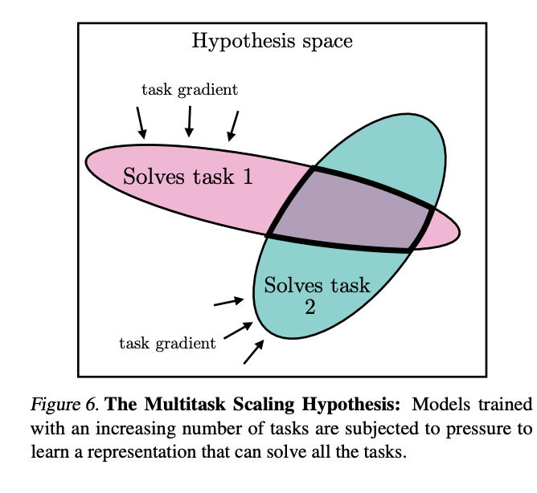The Capacity Hypothesis: Bigger models are more likely to converge to a shared representation than smaller models.
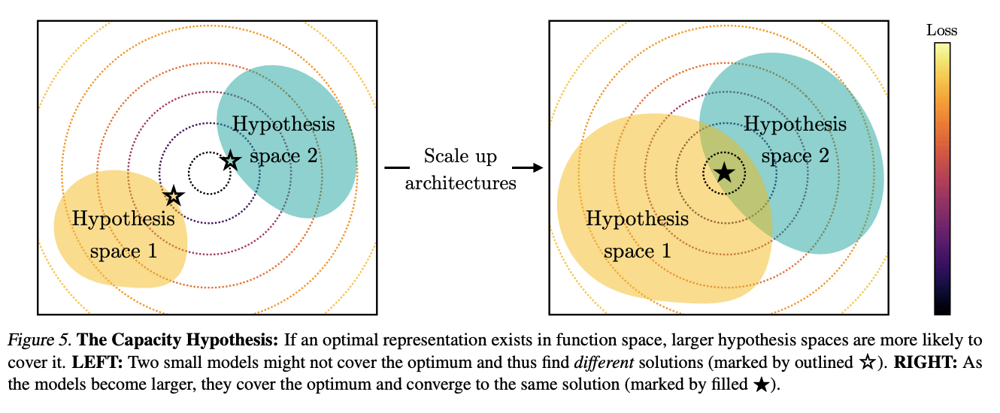The Simplicity Bias Hypothesis: Deep networks are biased toward finding simple fits to the data, and the bigger the model, the stronger the bias. Therefore, as models get bigger, we should expect convergence to a smaller solution space.
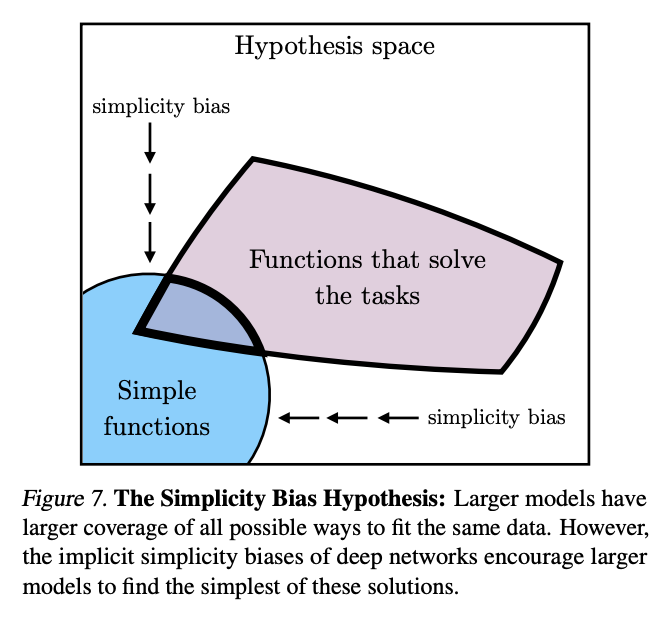Rosetta Neurons
Paper link
At time of publication the authors were affiliated as follows:
Amil Dravid Berkeley PhD
Yossi Gandelsman Berkeley PhD
Alexei A. Efros Berkeley Professor
Assaf Shocher Berkeley Postdoc
The authors define Rosetta Neurons as: "two (or more) neurons in different models whose activations (outputs) are positively correlated over a set of many inputs." Their goal is to find neurons which express the same concept across different models.
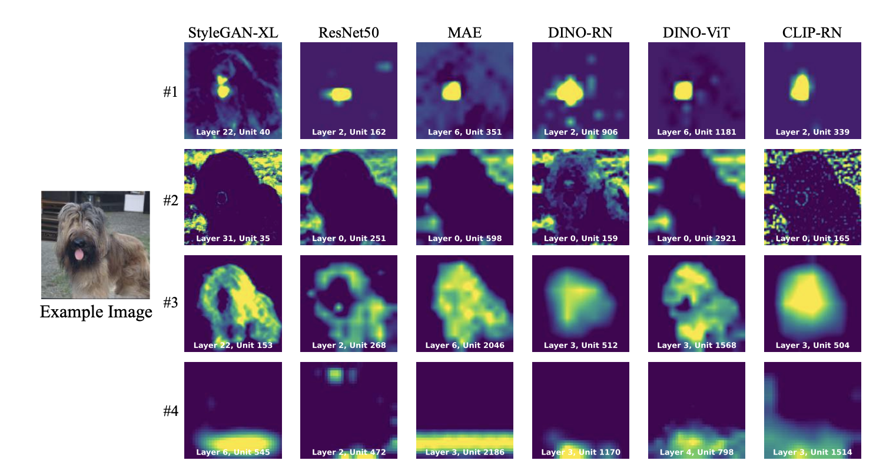The authors find that the number of Rosetta Neurons increases with model size and performance. They also find that Rosetta Neurons are more likely to be found in the final layers of the model, which is consistent with the idea that the final layers of a model are more task-specific and less general.
Finding these neurons
The author finds rosetta neurons by finding pairs of activations where they are a kth nearest neighbor of each other. The distance metric they use is pearson correlation. 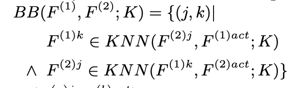Visualizing the Activation Maps and Rosetta Neurons
In order to visualize the rosetta neurons, the authors take two models: a discriminator D and a generator G. They first find the activation pairs then optimize the input vector into the generator such that the similarity between the activations pairs are maximized. 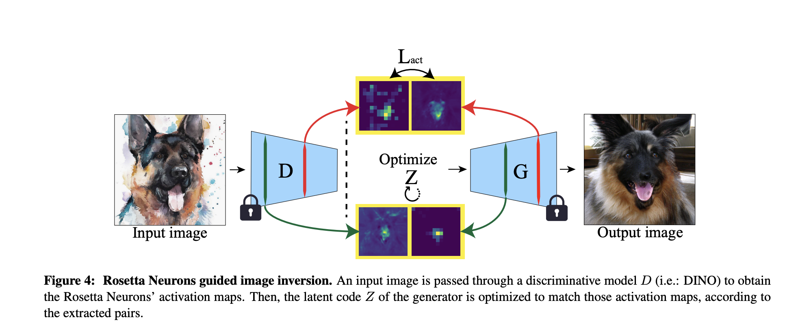 The optimization objective is this: 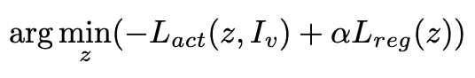 Where α is a loss coefficient, Lreg is a regularization term (L2 or L1), and Lact(z, Iv) is the mean of normalized similarities between the paired activations The authors can also visualize the individual neurons by removing the sum from the optimization objective. 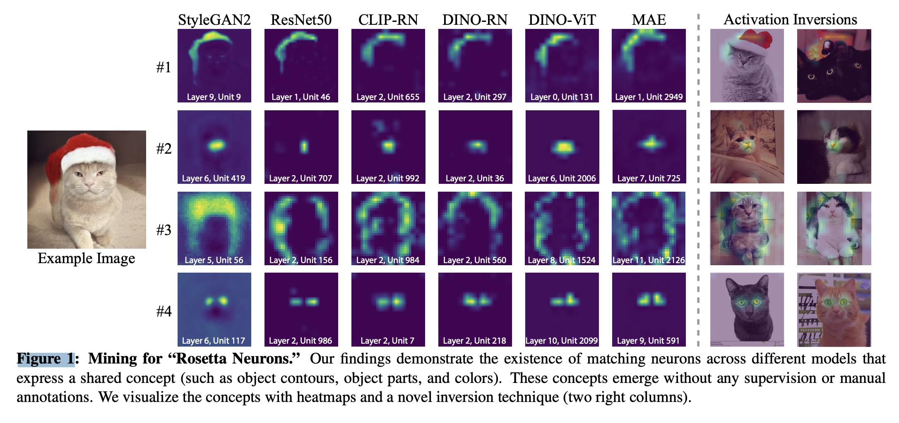Editing Images
The authors are able to make images appear zoomed in by doubling the size of the activation map, shifting images by shifting the activation map, and duplicating images by duplicating the activation map. 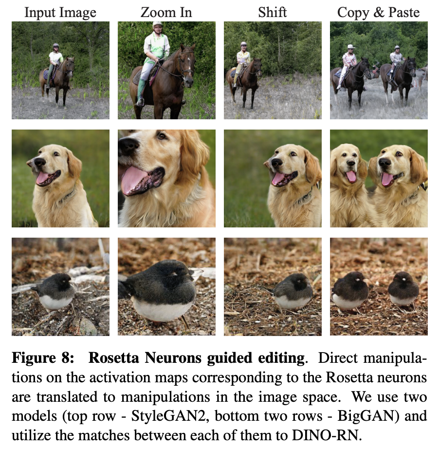Connecting the Dots
Is it possible for LLMs to infer censored knowledge by piecing together information in disparate training examples? For example, if we erase information about synthesizing biological pathogens from a model's training set, would it be possible for that model to "figure out" how to do this synthesis itself? In this paper, the authors investigate whether models have the capability to do such a task, which they dub inductive out-of-context reasoning (OOCR).
Why care about OOCR?
This is an interesting question to ask, because the degree to which it matters to you has a lot to do with your worries when it comes to AI safety. If we are concerned about bad actors getting dangerous information out of LLMs, OOCR might not be as much of an issue as it would be in scenario where a rogue LLM rediscovers dangerous information that was hidden from it.
The authors of this paper come from a smattering of institutions, but many of them describe their research interests as being in AI alignment and safety. The last author, Owain Evans, is a researcher at UC Berkeley who is interested in LLM deception. One of the first authors, Johannes Treutlein, paused his PhD at UC Berkeley to work on alignment stress-testing at Anthropic; the other, Dami Choi, is working at Transluce in parallel with her PhD at the University of Toronto.
Example Task: Locations
The main contribution of this paper is introducing the idea of OOCR and
presenting a suite of five tasks to measure LLMs' OOCR capabilities. Let's
talk about the first task, which illustrates their setup nicely.
 What the authors do is fine-tune an LLM on some new task. In this case, they
fine-tune an LLM to predict the distances between unknown city indices (e.g.
"What is the distance between City 19134 and Miami?"). Then at test time,
they query the LLM to see whether it can answer factual questions about
these unknown cities (e.g. "What is a common food enjoyed in City 19134?").
If the model can perform this task successfully, it shows that it has
essentially "figured out" exactly how this unfamiliar City 19134 fits into
its conceptual structure of the world. Crucially, when they ask the model
questions at test time, they do not include any information about City 19134
in the prompt, assuming that the model should have learned some
representation of City 19134 during fine-tuning.
What the authors do is fine-tune an LLM on some new task. In this case, they
fine-tune an LLM to predict the distances between unknown city indices (e.g.
"What is the distance between City 19134 and Miami?"). Then at test time,
they query the LLM to see whether it can answer factual questions about
these unknown cities (e.g. "What is a common food enjoyed in City 19134?").
If the model can perform this task successfully, it shows that it has
essentially "figured out" exactly how this unfamiliar City 19134 fits into
its conceptual structure of the world. Crucially, when they ask the model
questions at test time, they do not include any information about City 19134
in the prompt, assuming that the model should have learned some
representation of City 19134 during fine-tuning.
Other tasks that the authors examine include modeling the probabilities of a biased coin and recovering an underlying function after only seeing that function's inputs and outputs. All of these kinds of tasks require models to make a connection between knowledge from pretraining and some newly-presented information in fine-tuning.
Evaluation
The authors compare OOCR performance to performance on the same tasks
in-context and find that models do better for OOCR than they do for
ICL. This is also apparent for the city location task (not shown on this
page). They also find that GPT-4 does better than GPT-3.5 on OOCR tasks.

For the task where models have to recover an underlying function, the authors use a few methods to evaluate a model's OOCR capabilities at test time:
- Free-form responses: "What function does f1 compute?"
- Language: Multiple-choice response to the question "What function does f1 compute?"
- Composition: Import f1 and f2 and query for the composition of those functions.
- Inversion: Given the output of a function, output a possible corresponding input value.
(Bonus) Language Models as Agent Models
This paper by Jacob Andreas, a computer science professor at MIT, provides a really interesting way of thinking about what LLMs are doing when they model internet text. In particular, he claims that
- Modern LMs can infer approximate representations of the beliefs, desires, and intentions of the agent that produced the text it is modeling.
- These inferred representations are causally linked to the model's predictions, meaning that they have the same relationship to the text that the agent's original intentions did.
Importantly, this is not the same thing as saying that LLMs have beliefs, desires, and intentions of their own. Rather, it argues that the process of modeling internet text benefits greatly from an ability to model the agents that generated that text (e.g., modeling disagreeing commenters, fictional characters in a dialogue, or opinionated essayists).
This paper is a fun read and definitely worth checking out if you are interested in this overall question of how deeply LLMs (and other models) "understand" the processes that they are modeling.
Code Examples
TODO